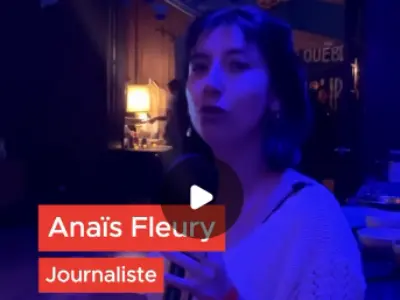
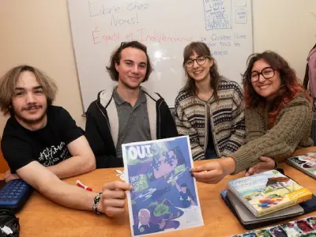
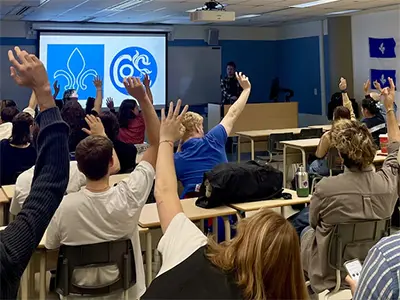

Médias

La 2e édition de sa soirée multidisciplinaire souverainiste : La Grande Farce
Quartier libre
29 mar. 2026
Petite cartographie contemporaine du Oui et du Non
Le Devoir
1er nov. 2025
Souveraineté du Québec : pourquoi les jeunes retournent vers le « oui »?
Radio-Canada
31 oct. 2025
Jeunes, fiers, connectés: les nouveaux souverainistes québécois espèrent redynamiser un mouvement vieillissant
Noovo Info
30 oct. 2025

La nouvelle vague souverainiste, 30 ans après le référendum
La Tribune
30 oct. 2025
‘A renewed movement’: Support for Quebec sovereignty gaining traction among young people
The Gazette
30 oct. 2025
Quebec’s newest sovereigntists hope to revive an aging movement
CTV News
30 oct. 2025
À Sherbrooke, la relève souverainiste s’organise sur les campus
Radio-Canada
30 oct. 2025
L'indépendentisme en montée chez les jeunes?
FM 93
28 oct. 2025
Hundreds of Montrealers join march calling for Quebec independence
CTV News
26 oct. 2025
Young Montreal sovereigntists long for Quebec independence, 30 years after referendum
CBC
26 oct. 2025

Les comités étudiants indépendantistes se multiplient au Québec
Radio-Canada
30 sept. 2025
Indépendantisme en hausse chez les jeunes
98,5 FM
30 sept. 2025
Des comités pour un Québec libre dans tous les CÉGEPS?
Generation OUI
29 sept. 2025